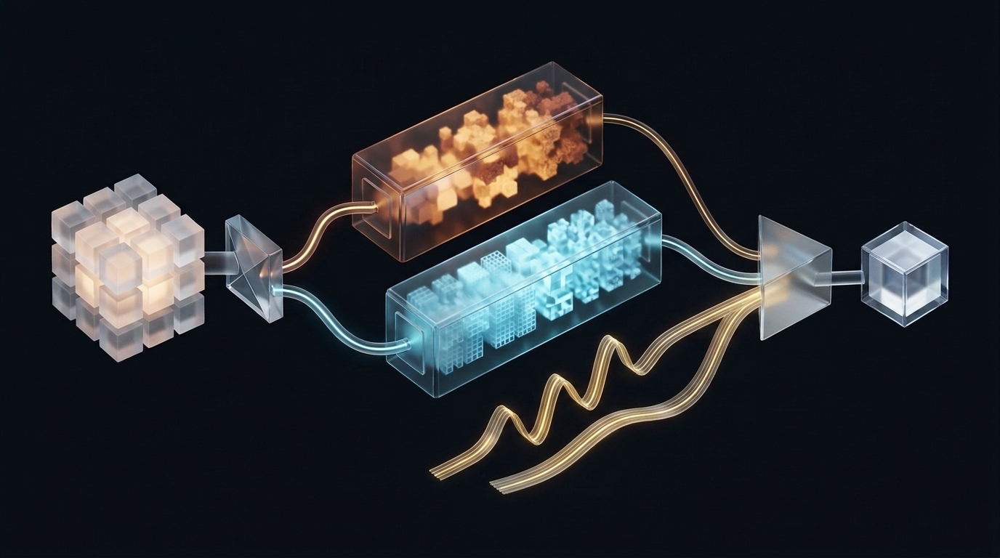

模型架构设计：3D-VAE、原生音画一体与 MoE vs Dense 的终极抉择
如果把数据比作石油，模型架构就是发动机。短短两年间，视频生成的发动机完成了从 2D UNet → Dense DiT → 音画联合双流/单流 DiT + MoE 混合专家 的三级跳。这一章我们不堆枯燥的代码，用最直观的几何与工程账本，讲透 3D-VAE 怎么省算力、声音和画面怎么在 Transformer 里「谈恋爱」，以及为什么 MoE 正在全面接管下一代视频大模型。

一、第一道关：为什么必须先用 3D Causal VAE 压扁时空？
算一笔吓人的账：一段 5 秒、720p（1280×720）、24fps 的 RGB 视频，一共有 120 × 1280 × 720 × 3 ≈ 3.3 亿 个像素数值！如果直接把像素扔进 Transformer 算全局 Self-Attention，复杂度是序列长度的平方 O(N²)，全世界所有 H100 加起来都算不动。
所以现代视频模型的第一步，都是用 3D Causal VAE（三维因果变分自编码器） 把视频狠狠压缩进潜空间（Latent Space）：
- 典型压缩率：时间压缩
4×（新一代高压缩 VAE 如 Wan 2.2-5B / LTX-Video / DC-AE 甚至做到4×16×16或8×16×16），空间长宽各压缩8×或16×。 - 为什么叫「Causal（因果）」？ 普通 3D 卷积会把第 1 帧和第 2、3 帧混在一起卷，这样就没法把单张静态图片（T=1）直接塞进同一个 VAE 了！因果 3D 卷积规定：当前帧只能看自己和过去的帧，绝不偷看未来帧。这样第 1 帧永远独立编码，天然无缝支持「图文视频联合训练」！
- 音频这边怎么压？ 同样不能直接预测 48kHz 的原始波形（每秒 48,000 个点），而是通过 Audio VAE / 1D-DAC / Mel-VAE 把立体声压缩成每秒 25–50 个连续潜向量（Latent Tokens），和视频帧在时间轴上完美对齐。
二、核心难题：声音和画面怎么在 DiT 里实现「毫秒级音画一体」？
传统方案是「两阶段拼接」：先用视频模型生成无声视频，再把视频喂给 Foley 模型（如 MMAudio / FoleyCrafter）后期配音。这就像拍完默片再找配音演员，画面里的嘴型、鼓点、爆炸瞬间永远差那么一点火候，而且没法实现「因为听到一声巨响，人物惊恐回头」这种声音反推画面的双向因果！
2025–2026 年的原生音画模型（Veo 3、LTX-2.5、Ovi、MMX-H3）全部转向单次联合扩散（Joint Audio-Video Diffusion），主流有两种融合架构：
视频一秒可能只有 6 个 Latent 帧，而音频一秒可能有 25 个 Latent 步。如果直接给它们各自编号 0, 1, 2...，第 2 秒的视频和第 2 秒的声音在位置编码上完全对不上！
解决办法非常优雅：把视频和音频的时间维 RoPE 全部归一化到真实物理秒数（如 t ∈ [0.0s, 5.0s]）。这样不管各自采样率是多少，第 2.35s 的拍手画面 Token 和第 2.35s 的啪啪声 Token 在注意力点积里天然距离为零，口型和拟音瞬间严丝合缝！
三、重头戏：视频生成里的 MoE vs Dense，到底该怎么选？
以前大家做视频模型（CogVideoX-5B、HunyuanVideo-13B、Wan 2.1-14B）清一色都是 Dense（稠密模型）——也就是说，推理每一步、算每一个时空 Token，都要把全部 140 亿参数完整乘一遍。
但视频生成有个非常反直觉的特性：扩散去噪过程的不同阶段，以及画面里的不同区域，干的根本不是同一件事！
- 高噪声阶段（去噪前 40%，t ≈ 1.0 → 0.6）：模型在画「草图布局、物体轮廓、整体运镜方向和物理大轨迹」，此时完全看不清毛孔和纹理。
- 低噪声阶段（去噪后 60%，t ≈ 0.6 → 0.0）：整体构图已经定死了，模型在专心画「皮肤毛孔、衣服织物、水花高光、精细光影和唇齿微细节」。
- 空间差异：画面里 70% 是平滑的天空和模糊背景，只有 30% 是复杂的人脸和高速运动的手部。
让同一个 Dense 权重同时兼顾「宏观构图」和「微观雕花」，就像让一个既要管城市规划又要修手表的全才干活——参数一扩到 30B、50B，显存和推理延迟就彻底爆炸。于是 MoE（Mixture-of-Experts，混合专家架构） 闪亮登场！
视频生成里的「两种 MoE 流派」
流派 1：时间步/噪声级 MoE（Timestep / Denoising-Stage MoE）
代表：Wan 2.2 (A14B, 总参 27B / 激活 14B)、eDiff-I
按去噪信噪比（SNR / Timestep）硬切专家：高噪声区间激活「布局专家（High-Noise Expert）」，低噪声区间自动切换成「细节专家（Low-Noise Expert）」。
最大爽点：总容量翻倍到 27B，但单步计算量（FLOPs）与 14B Dense 完全持平！而且因为同一步所有 Token 走同一个专家，完全没有传统 MoE 的 All-to-All 通信瓶颈、没有负载不均（Load Balancing）头疼事，工程落地极其丝滑！
流派 2：Token 级稀疏路由 MoE（Fine-grained Token-level MoE）
代表：DiT-MoE、Sparse Video DiT、新一代 30B–100B+ 大底座
照搬 DeepSeek-V3 / Mixtral 思路，把 DiT 每个 Block 里的 FFN 拆成 N 个（比如 8 或 16 个）专家 + 1 个共享专家（Shared Expert），由 Router 给每个时空 Token 动态选 Top-2 专家。
最大爽点：扩展天花板极高，能把模型总参轻松推到 50B–100B+，同时只激活 8B–15B；不同专家会自动涌现出专攻「人脸/手部」「自然流体」「文字」「音频频谱」的分工。缺点是训练需要 Aux-Loss / 无辅助损失负载均衡，多卡推理需 Expert Parallelism 通信优化。
四、Dense vs Timestep-MoE vs Token-MoE 硬核对比账本
| 对比维度 | 传统 Dense DiT (如 Wan 2.1 / Hunyuan 13B) |
Timestep-MoE (如 Wan 2.2 27B-A14B) |
Token-level MoE (如 32B-A4B / 60B-A10B) |
|---|---|---|---|
| 单步推理 FLOPs | 高（100% 参数每步全算） | 与单专家 Dense 完全相同 | 极低（仅激活 15%–25% 参数） |
| 显存占用（推理） | 中等（单份权重） | 高（双份权重，但可阶段间 Offload 省一半！） | 高（所有专家常驻显存或 EP 切分） |
| 模型容量扩展性 | 差（扩到 30B 推理慢死） | 中等（通常 2–4 个噪声段专家） | 极强（轻松 Scale 到 100B+） |
| 训练稳定性与通信 | 最稳、无额外通信 | 很稳、无 All-to-All 通信 | 较复杂（需路由防坍塌、EP 通信开销） |
| 核心擅长场景 | 中小参数端侧/快速基座 | 性价比之王：不增算力白嫖 2 倍容量与电影细节 | 超大参数全能音画底座 + 极速低激活推理 |
用 Timestep-MoE（比如在 t = 0.875 从高噪专家切到低噪专家）时，如果两个专家的训练区间完全不重叠，切换瞬间容易出现画面轻微闪烁或色调微跳。实战技巧是让两个专家在交界处留一段重叠区间（Overlap Margin）共同微调，或者在后期蒸馏时直接把双专家平滑融合进学生模型里。